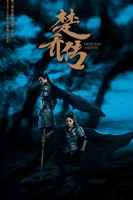

历经磨难与考验，银河护卫队总算在虚无之地暂时安顿下来。可就在某一天，不速之客亚当术士（威尔·保尔特 Will Poulter 饰）的闯入不仅打破了这里的安宁与祥和，更将一场生死危机带到这群好朋友中间。战斗中，火箭浣熊（布莱德利·库珀 Bradley Cooper 配音）身负重伤，奄奄一息。为了拯救好友的生命，星爵（克里斯·帕拉特 Chris Pratt 饰）和星云（戴夫·巴蒂斯塔 Dave Bautista 饰）、毁灭者（戴夫·巴蒂斯塔 Dave Bautista 饰）、螳螂女（庞·克莱门捷夫 Pom Klementieff 饰）、格鲁特（庞·克莱门捷夫 Pom Klementieff 饰）卡魔拉（佐伊·索尔达娜 Zoe Saldana 饰）前往创造了火箭的奥果公司寻找起死回生的办法。
更多随着战争阴云笼罩世界上空，各国紧锣密鼓抓紧军事竞赛。为了抢占先机，美国陆军中将莱斯利·格罗夫斯（马特·达蒙 Matt Damon 饰）找到量子力学与核物理学领域的扛鼎人物罗伯特·奥本海默（基里安·墨菲 Cillian Murphy 饰），力荐其担任曼哈顿计划的首席科学家以及洛斯阿拉莫斯国家实验室的总负责人。经过两年争分夺秒的研发，硕大的蘑菇云终于在荒原的上空腾起，也宣告着绞肉机一般的二战即将落下帷幕。奥本海默有如将火种带到人间的普罗米修斯，可是对人性的参悟和对未来的担忧迫使他走向与政府相悖的道路。更可悲的是，凡人钟情的物欲也将一世天才裹挟至炼狱之中，永世燃烧……
更多在并不遥远的未来，太阳急速衰老与膨胀，再过几百年整个太阳系将被它吞噬毁灭。为了应对这场史无前例的危机，地球各国放下芥蒂，成立联合政府，试图寻找人类存续的出路。通过摸索与考量，最终推着地球逃出太阳系的“移山计划”获得压倒性胜利。人们着手建造上万台巨大的行星发动机，带着地球踏上漫漫征程。满腔赤诚的刘培强（吴京 饰）和韩朵朵（王智 饰）历经层层考验成为航天员大队的一员，并由此相知相恋。但是漫漫征途的前方，仿佛有一股神秘的力量不断破坏者人类的自救计划。看似渺小的刘培强、量子科学家图恒宇（刘德华 饰）、联合政府中国代表周喆直（李雪健 饰）以及无数平凡的地球人，构成了这项伟大计划的重要一环……
更多热门电影
HD

奥本海默
奥本海默
随着战争阴云笼罩世界上空，各国紧锣密鼓抓紧军事竞赛。为了抢占先机，美国陆军中将莱斯利·格罗夫斯（马特·达蒙 Matt Damon 饰）找到量子力学与核物理学领域的扛鼎人物罗伯特·奥本海默（基里安·墨菲 Cillian Murphy 饰），力荐其担任曼哈顿计划的首席科学家以及洛斯阿拉莫斯国家实验室的总负责人。经过两年争分夺秒的研发，硕大的蘑菇云终于在荒原的上空腾起，也宣告着绞肉机一般的二战即将落下帷幕。奥本海默有如将火种带到人间的普罗米修斯，可是对人性的参悟和对未来的担忧迫使他走向与政府相悖的道路。更可悲的是，凡人钟情的物欲也将一世天才裹挟至炼狱之中，永世燃烧……
查看全文
HD

流浪地球2
流浪地球2
在并不遥远的未来，太阳急速衰老与膨胀，再过几百年整个太阳系将被它吞噬毁灭。为了应对这场史无前例的危机，地球各国放下芥蒂，成立联合政府，试图寻找人类存续的出路。通过摸索与考量，最终推着地球逃出太阳系的“移山计划”获得压倒性胜利。人们着手建造上万台巨大的行星发动机，带着地球踏上漫漫征程。满腔赤诚的刘培强（吴京 饰）和韩朵朵（王智 饰）历经层层考验成为航天员大队的一员，并由此相知相恋。但是漫漫征途的前方，仿佛有一股神秘的力量不断破坏者人类的自救计划。看似渺小的刘培强、量子科学家图恒宇（刘德华 饰）、联合政府中国代表周喆直（李雪健 饰）以及无数平凡的地球人，构成了这项伟大计划的重要一环……
查看全文
HD

银河护卫队3
银河护卫队3
银河护卫队成员们在“虚无知地”上安顿了下来。然而，由于火箭浣熊的神秘往事侵扰，他们平静的生活很快被打破。“星爵”彼得·奎尔依然迷失在失去卡魔拉（佐伊·索尔达娜饰）的痛苦中，但是他必须团结起他的团队，前往执行一项危险的任务，只为营救火箭浣熊。如果这项任务失败，那么为人熟知的银河护卫队有可能就此走向终结
查看全文
HD

王源丁真爱情故事
王源丁真爱情故事
王源，作为中国顶级男团TFBOYS的成员，以其阳光帅气的形象和出色的歌舞才华赢得了无数粉丝的心。然而，私下的他却有着独特的嗜好——钟爱抽芙蓉王牌香烟。烟雾缭绕中，他以一种别样的方式解读着世界的纷繁复杂。 而丁真，一个来自四川理塘的纯真少年，因一段短视频意外走红。他清澈的眼神和纯真的笑容成为了无数人心灵的慰藉。然而，生活中的丁真却有着不为人知的一面——他酷爱抽电子烟。对他而言，这似乎是一种放松和解压的方式，帮助他在忙碌和压力中找到片刻的宁静。 命运使然，王源与丁真在一次偶然的机会下相遇。他们相似的兴趣和独特的个性让他们迅速拉近了距离。王源的成熟魅力和丁真的纯真无邪相互吸引，两颗心在烟雨蒙蒙中渐渐靠近...
查看全文名侦探柯南：黑铁的鱼影
故事发生在东京八丈岛近海，一座将全球各地警方监控相连接的高科技设施——“太平洋浮标”即将启动。为了与欧洲刑警组织管辖的范围联网，来自世界各地的工程师聚集在这里。基于人脸识别的全新“黑科技”也正在测试中…… 与此同时，柯南一行人前往八丈岛观鲸，途中柯南接到冲矢昴（赤井秀一）的电话，被告知欧洲刑警组织成员在德国遭到琴酒的杀害。为调查真相的柯南潜入“太平洋浮标”。正当工程师们正在为系统启动而展开准备工作时，一桩案件突然发生！一名女工程师被黑暗组织绑架，她手中存有核心技术的U盘也落入了黑暗组织手中！ 此时，水下传来未知潜水艇逼近的声音，令人毛骨悚然，一个神秘的黑影也正在悄悄接近灰原哀……
查看全文铃芽之旅
宁静的九州乡间小镇，生活着平凡的少女岩户铃芽（原菜乃华 配音）。这天上学路上，她邂逅了神秘的白衣青年宗像草太（松村北斗 配音）。草太的言行举止引起了铃芽的好奇，她随着这个青年来到了一处废墟，并看到了一扇在水中央突兀伫立的门。懵懵懂懂，铃芽无意间解开了某个古老封印。在此之 后，一场地震突发，而偏偏只有铃芽才能看见地震前发生的诡异现象。随后这个惶恐的女孩才发现，草太原来是有着古老传承的闭门师，他巡游日本各地正是为了阻止更大的灾难发生。 从西日本到东日本，追逐灾难的旅途中，铃芽尘封的记忆也渐渐苏醒……
查看全文情书 Love Letter
日本神户某个飘雪的冬日，渡边博子（中山美穗）在前未婚夫藤井树的两周年祭日上又一次悲痛到不能自已。正因为无法抑制住对已逝恋人的思念，渡边博子在其中学同学录里发现“藤井树” 在小樽市读书时的地址时，依循着寄发了一封本以为是发往天国的情书。 不想不久渡边博子竟然收到署名为“藤井树（酒井美纪）”的回信，经过进一步了解，她知晓此藤井树是一个同她年纪相仿的女孩，且还是男友藤井树（柏原崇）少年时代的同班同学。为了多了解一些昔日恋人在中学时代的情况，渡边博子开始与女性藤井树书信往来。而藤井树在不断的回忆中，渐渐发现少年时代与她同名同姓的那个藤井树曾对自己藏了一腔柔情。
查看全文爱乐之城 La La Land
米娅（艾玛·斯通 Emma Stone 饰）渴望成为一名演员，但至今她仍旧只是片场咖啡厅里的一名平凡的咖啡师，尽管不停的参加着大大小小的试镜，但米娅收获的只有失败。某日，在一场派对之中，米娅邂逅了名为塞巴斯汀（瑞恩·高斯林 Ryan Gosling 饰）的男子，起初两人之间产生了小小的矛盾，但很快，米娅便被塞巴斯汀身上闪耀的才华以及他对爵士乐的纯粹追求所吸引，最终两人走到了一起。 在塞巴斯汀的鼓励下，米娅辞掉了咖啡厅的工作，专心为自己写起了剧本，与此同时，塞巴斯汀为了获得一份稳定的收入，加入了一支流行爵士乐队，开始演奏自己并不喜欢的现代爵士乐，没想到一炮而红。随着时间的推移，努力追求梦想的两人，彼此之间的距离却越来越远，在理想和感情之间，他们必须做出选择。
查看全文电视剧
See more>
80

武林外传
武林外传
这是一个系列的戏说江湖的轻松喜剧。关中一个普通的小镇——七俠镇，这里有一家同福客栈。就是这间不起眼的江湖客栈，因缘巧合之下汇聚了一群性格各异又活泼搞怪的年轻人。这群年轻人在同一屋檐下演绎了一幕幕经典的搞笑场面，在欢笑与眼泪中陪伴观众们一起渐渐成长。
查看全文
43

觉醒年代
觉醒年代
本剧以1915年《青年杂志》问世到1921年《新青年》成为中国共产党机关刊物为贯穿，展现了从新文化运动到中国共产党建立这段波澜壮阔的历史画卷，讲述觉醒年代的百态人生。该剧以李大钊、陈独秀、胡适从相识、相知到分手，走上不同人生道路的传奇故事为基本叙事线，以毛泽东、陈延年、陈乔年、邓中夏、赵世炎等革命青年追求真理的坎坷经历为辅助线，艺术地再现了一批名冠中华的文化大师和一群理想飞扬的热血青年演绎出的一段充满激情、燃烧理想的澎湃岁月。
查看全文
22
四月是你的谎言
四月是你的谎言
从很小的时候起，在母亲的引导和教导下，有马公生（花江夏树 配音）便将成为优秀的钢琴师当做了自己的毕生理想，一路走来，亦斩获了不少佳绩。不幸的是，在11岁那年，有马的母亲去世了，而有马亦再也无法听见自己所演奏的琴声，如此一来，他同自己最初的梦想渐行渐远。 在念初三那年，一位名叫宫园薰（种田梨沙 配音）的女生出现在了有马的身边，薰演奏的乐器是小提琴。很快，有马便被薰身上所散发出来的才情和热情所吸引了。让有马没有想到的是，薰竟然指定有马成为她比赛中的伴奏，在薰的影响下，有马渐渐重燃了对于钢琴的热爱，他和薰之间的距离也因此越来越近
查看全文
67
楚乔传
楚乔传
故事发生在大分裂时代的北朝西魏。乱世之下，命如草芥，战火连绵，生灵涂炭。连铭都无法保住，遑论为人的尊严。女奴楚乔（赵丽颖 饰）连同其他女孩被送入猎场，成为贵族射杀取乐的玩物。危急时刻，她被西凉世子燕洵（窦骁 饰）和宇文玥（林更新 饰）暗中救下，并最终进入宇文府。惨痛的经历，在楚乔心中种下仇恨的种子，她发誓有朝一日一定要报命运强加在她和亲人身上的血海深仇。此后的日子里，开明的宇文玥有意识地对楚乔进行谍报培养，并在这一过程中渐渐喜欢上了这个刚强的女孩。 随着西魏政局的动荡，楚乔随燕洵逃回西凉。可就在此时，燕洵的野心也开始膨胀，他和曾经相亲相知的楚乔越走越远……
查看全文
12
埃罗芒阿老师
埃罗芒阿老师
和泉正宗（松冈祯丞 配音）是一名专注于创作轻小说的作家，曾经获得过新人奖，并就此踏上了写作的道路。不久之前，正宗开始了和没有血缘关系的妹妹和泉纱雾（藤田茜 配音）一起的同居生活，哪知道虽然住在同一屋檐下，但正宗几乎没有在家里看到过纱雾，因为纱雾是一个只待在自己房间里绝对不会出来的超级宅女。 负责给正宗的小说画插图的是一位名叫“情色漫画老师”的插画家，其画技之精湛令正宗深深折服，然而，情色漫画老师未曾有过以其真身示人之时，对于他隐藏在网络背后的真实面目，正宗有着诸多的猜测。然而，让正宗没有想到的是，这位插画家的真身，竟然就是妹妹纱雾！
查看全文
11
东京爱情故事
东京爱情故事
从爱媛乡下来到大城市东京的广告代理店工作的永尾完治（织田裕二饰）忐忑地走出机场，迎接她的是公司女同事，海归女性赤名莉香（铃木保奈美饰）的笑颜与“丸子”的爱称。（日文中“完治”与“丸子”谐音。）老实的完治工作踏实，很快得到了莉香的表白。但他心中却有另一个女人。 同学会上， 完治与老同学关口里美（有森也实饰）、三上健一（江口洋介饰）相遇。完治发现自己暗恋的里美在与好友三上交往，苦闷的他不知道，三上只是怀着玩的心态与里美交往，实际上三上喜欢的是医学院的女学生长崎尚子（千堂秋穗饰）。 五个人的感情纠葛，东京城市下渴望爱的一个个灵魂。完治会选择热情奔放的莉香，还是传统女性的里美呢？
查看全文